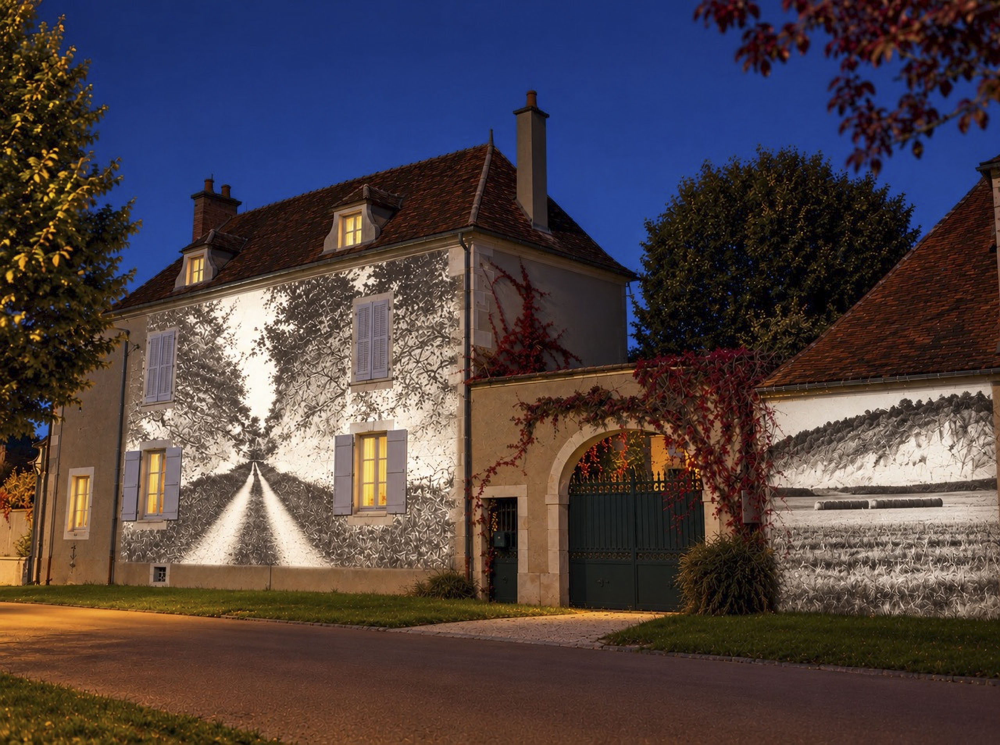

Un territoire à parcourir à travers des photographies ayant un autre point de vue sur le réel.

L’Envers est un festival de photographie qui invite à découvrir la photographie contemporaine hors des espaces d’exposition traditionnels. On y retrouve les productions réalisées durant la résidence et d’autres oeuvres, d’autres artistes. La ligne éditoriale du festival est de permettre de voir le réel autrement, tant par les techniques employées, le point de vue, la scénarisation…
Exposition de juillet à septembre sur la commune de Lignières dans l’Aube et ses alentours.